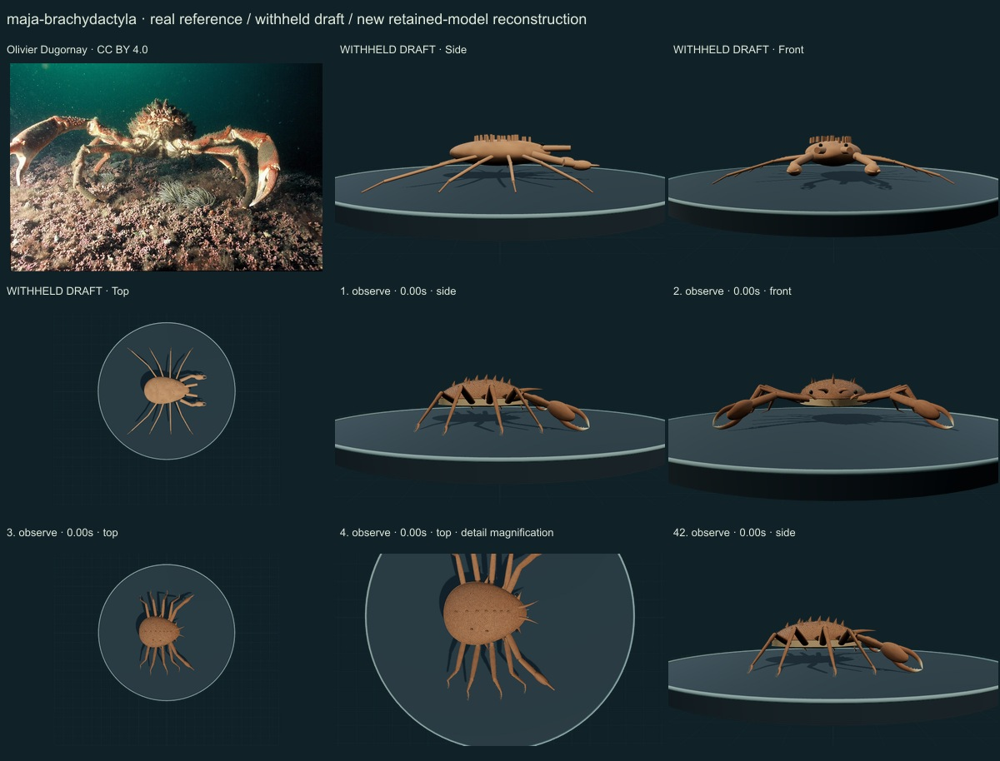
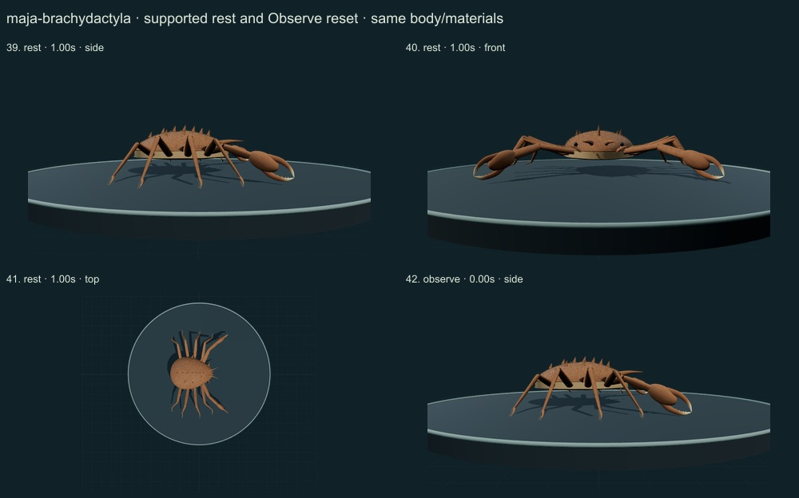
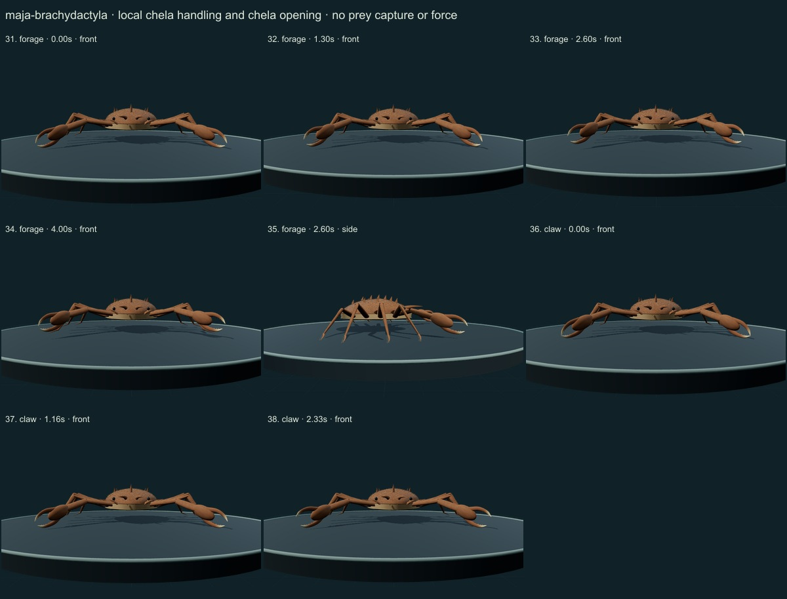
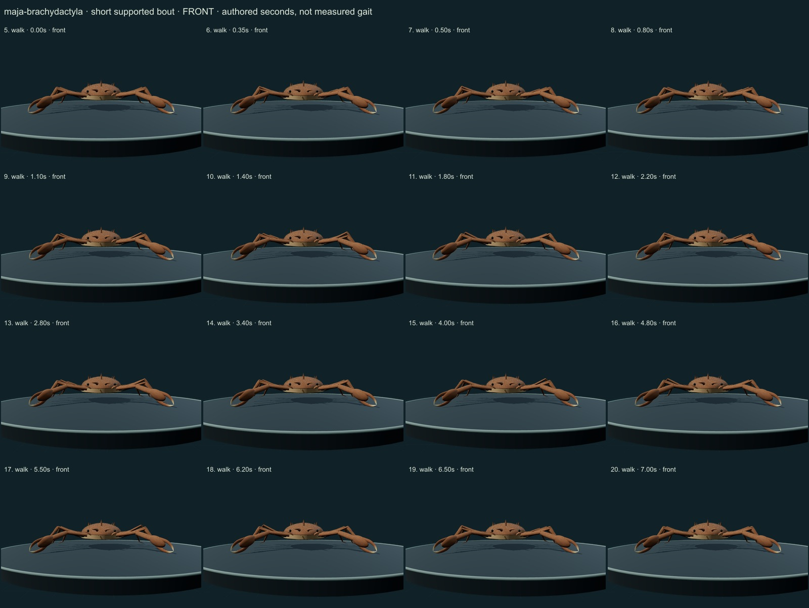
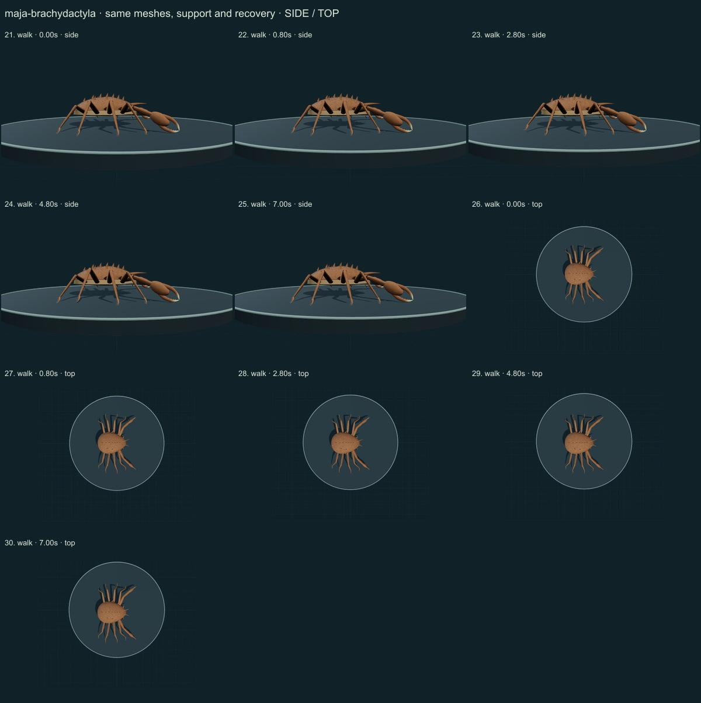

PhenoVoxel Archive · v0.6.19 · October 24, 2026
Atlantic spider crab · individual initial correction
This five-species release reaches 262 after verified publication. 38 saved drafts remain withheld; 288 species remain to 550, including 250 without saved drafts. Release register. Fine anatomy and biological dynamics remain partial, unmeasured and independently unvalidated.
The complete Plazi species-treatment HTML was retrieved, and Ng&Richer de Forges2015 selected diagnosis/figure captions were read. It distinguishes the current adult species from M.squinado and smaller more-spiny specimens. Zenodo PDF/figure downloads403 and a stalled browser reference page are recorded. The authentic Olivier Dugornay/Ifremer source-labelled male at Brest was actually compared, providing independent photographic shape context without a new taxon determination.
Olivier Dugornay · CC BY 4.0. Olivier Dugornay/Ifremer caption identifies a male on a maerl bottom near Brest. That source-labelled male phenotype guides robust arms and hairy reddish cuticle. Underwater light, attached cover, exact maturity, measurements and taxon diagnosis are not independently established. Resized inside1000 px, flattened and JPEG encoded; no generative alteration.
Exact source/license/download/local checksums remain in the data. Photograph identity and capture conditions are not independently re-established. Generated photographs are not used.
A strongly convex pear-shaped shell with separate median/lateral tapered spines and paired divergent rostral horns, eight long articulated walking limbs, curved terminal toes and longer robust male chelipeds replaces the smooth oval with rods. Male arms now spread laterally instead of pointing together in front.
Brown/red numerical cuticle variation, granular relief and attached short setae on the shell and limbs replace uniform flat pigment. No photographic pixels, encrusting-organism model or measured optical properties are embedded.
Remaining: Detailed orbital/hepatic spine clusters, antennal basal plates, maxillipeds, sternum, gonopods and appendage proportions remain incomplete or unmeasured. The shell and male palms still simplify the photo. Fine hair density, substrate cover and optical response are illustrative. Primary figure pixels could not be obtained in this access; no claim of figure-based geometric measurement is made.
Authored lateral support/recovery, local retained chela/antennule handling, finger opening and quiet support with lifted folded arms. No decorating, terminal-moult, muscle or reproductive physiology.
No measured coordinates, natural playback rate, joint limits, forces, fluid dynamics, muscle, food contact, ingestion, sensory physiology or independent biological validation. Fixed-length/support checks establish internal software consistency only.
42 actual final nonblank side/front/top, enlarged and action/posture states inspected individually on labelled sheets against the authentic photograph and scoped sources. Superseded frames excluded. Qualitative author assessment, not independent expert certification.





No 90% accuracy score, measured biological rate, physiological simulation or independent specialist certification is asserted. Software checks are not empirical validation. The prior 257 species objects and credited wolf/tiger behavior meshes are unchanged. Original geometry/material/controller code is MIT; real reference photos retain their individual licenses. Primary-paper figures were consulted where accessible and linked, not redistributed. Modern taxonomy is retained; Protista/Monera are legacy reporting conveniences and recorded occurrences are not native-range boundaries.
Per-frame findings, source scopes and checksums · Live model
.jpg){kind=link}